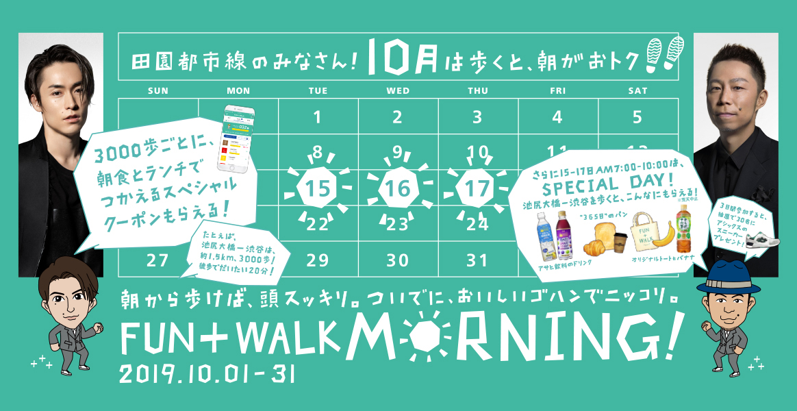

“歩く”ことを推進する強化月間「FUN＋WALK月間」が10月１日（火）よりスタート！
東京都内では10月15日（火）～17日（木）の
「FUN+WALK MORNING」スペシャルデーをメインイベントに据えた
“楽しく歩いて通勤する朝習慣をつくる”
「FUN+WALK MORNING」を展開します
-
田園都市線の皆さん! 10月は歩くと朝がおトク！
「FUN+WALK MORNING」
スペシャルデー -
渋谷・池尻大橋・中目黒周辺の飲食店にて
「FUN+WALK MORNING」
クーポン -
歩きやすい通勤スタイルをみんなとシェア！
SNSキャンペーン
FUN＋WALK月間 取組事例
-

北海道旭川市
健康づくりプラス１推進事業旭川市では、働く世代の方々の健康づくりをサポートしています。 市内事業所を対象に、仲間と一緒に職場で手軽に行える「90日間体重測定チャレンジ」などの取組を行っています。また、目標に応じたウォーキングモデルコースも紹介しています。
→ 詳細はこちら -

福島県
チャレンジふくしま県民運動「WALK BIZ」健康づくりの取組に身近なところからチャレンジしていく「チャレンジふくしま県民運動」を展開。その一環として歩きやすい靴や格好で通勤・勤務する「WALKBIZ（ウォークビズ）」を推進しています。
→ 詳細はこちら -

栃木県
身体を動かそうプロジェクト「歩きやすい靴でFUN+WALK！」栃木県保健福祉部では、スポーツ庁FUN+WALK PROJECTにおける3月の「FUN+WALK月間」に連携した取組として、また、健康長寿とちぎづくり県民運動「身体を動かそうプロジェクト」の一環として、3月18日(月)から3月24日(日)まで、通勤・勤務時間中等において歩きやすい靴を履き、「プラス1,000歩、プラス10分」を合い言葉に歩数増加を心がける取組を実施します。
→ 詳細はこちら